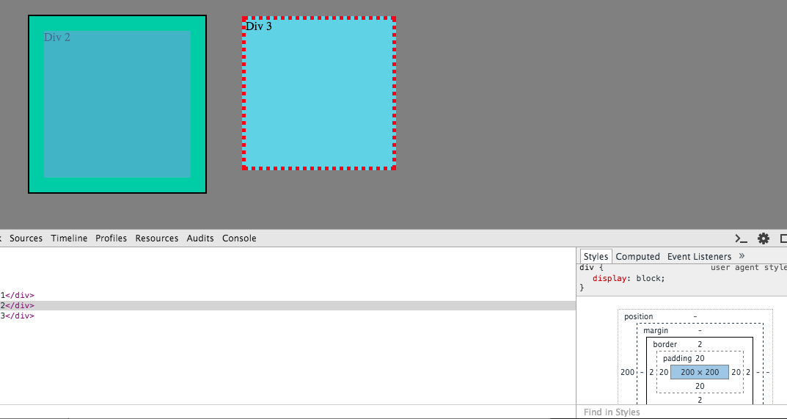

CSS Design
Margin, Border, and Padding
7/20/15
What is the difference between Margin, Border, and Padding?
All web developers are familiar with the computer language CSS (Cascading Style Sheets). CSS enables a developer to format and style a web page to make it more visually appealing for its user. Just about every website you interact with today uses CSS. In order to format a web page with CSS properly, you must understand the difference between margin, border, and padding.
- A margin creates open space around an element for formatting purposes. Margins are invisible but incredibly useful to clear up space and avoid a potentially cluttered web page.
- A border is what you would expect it to be - it outlines elements on a web page. If you want a picture or article to stand out, you will most likely give it some kind of border. Borders vary in size, color, and style. Here is an example of the CSS used to create a 5 pixel thick, solid black border --> border: 5px solid black;
- Padding is the space between the border and the content. Padding is valuable if your content feels cramped by your border and you want to free up some space.
Take a look at this image to help visually understand the three CSS elements:
The gray space between Div 2 and Div 3 is due to the use of margin. The two squares were originally just pixels apart from each other - adding margin seperated them. Div 2 has a 2 pixel thick, solid black border while Div 3 has a 5 pixel thick, dotted red border. It is easy to see how useful borders can be. Padding can be seen by looking at Div 2. The turquise area in the middle is the content, the green area outside of the content is the padding. Notice how the text "Div 3" is very close to its border? This is due to having zero padding.